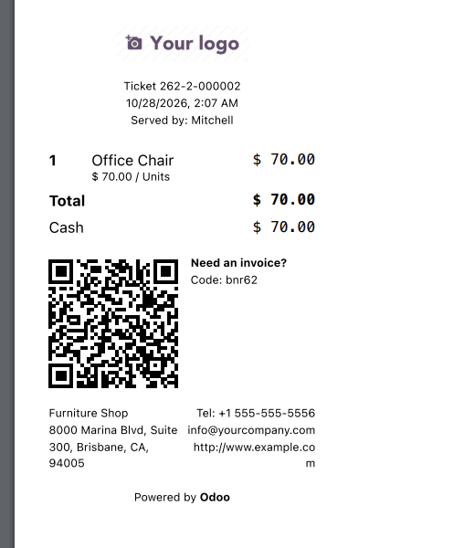

Configure per-POS thermal receipt layout widths and browser print preparation while preserving Odoo's native receipt and printer pipeline.
Important: browser and operating-system printer settings control physical paper size. This module does not provide Bluetooth, ESC/POS, cutting, or silent-print control.